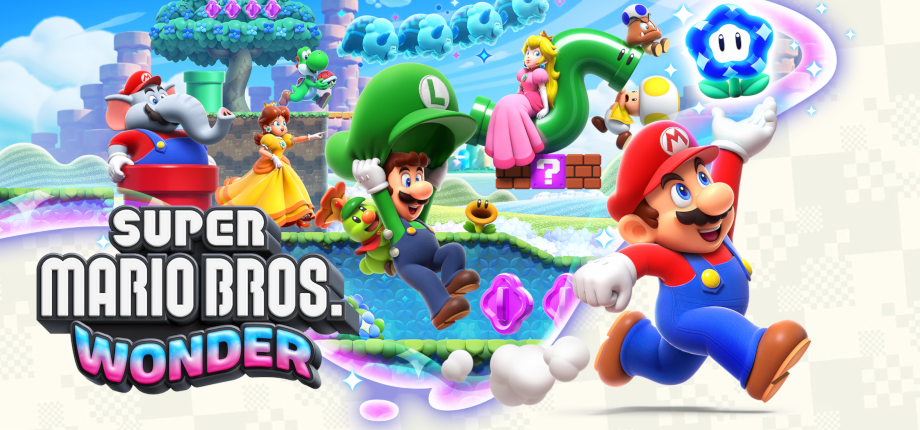
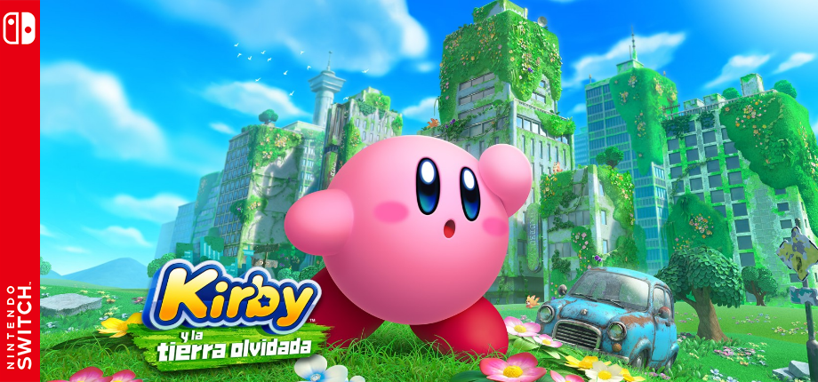
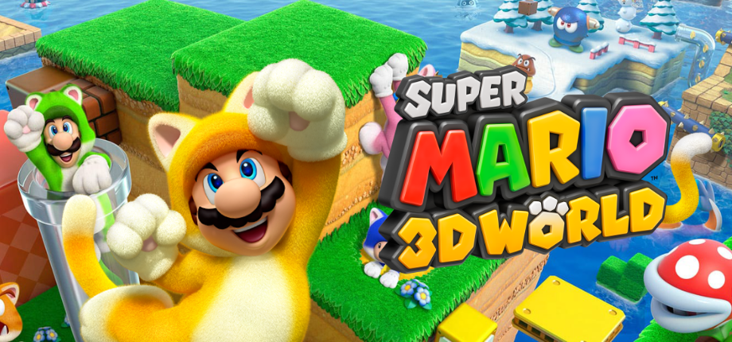

 Super Mario Bros. Wonder Finished Nintendo Switch 30 de abril de 2026 HLTBIGDBMetacriticNintendo
 Kirby and the Forgotten Land Finished Nintendo Switch 25 de març de 2026 HLTBIGDBMetacriticNintendo
 Super Mario 3D World Finished Nintendo Switch 18 de febrer de 2026 HLTBIGDBMetacriticNintendo